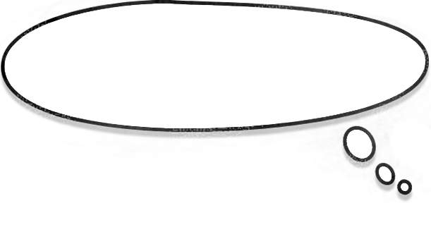

I'm waiting for the maintenance staff to come in the morning. It's so much nicer to freshen up and to take care of the big business when it's clean.

we have to keep up proportionality if we catch people peeing in public. There is no point in taking money from homeless people who can't pay. But Some people can pay and just don't want to. then In some cases just an enforced arrest helps.

At night and in winter the public toilet is closed. I prefer the bushes to the street, but the park started to close at night, too.